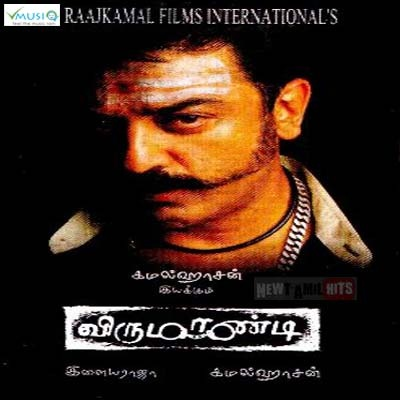

Virumandi (2004) — Two Accounts, One Tragedy

Virumandi is a 2004 Tamil action drama written, directed, produced, and co-edited by Kamal Haasan, who also plays the title role. The principal cast includes Pasupathy, Abhirami, and Napoleon, with music composed by Ilaiyaraaja.
The story is framed around Angela, a researcher opposed to capital punishment, interviewing two prison inmates. Their sharply different accounts of a village conflict gradually reveal how memory, self-interest, and violence shape the truth.
By revisiting the same events from opposing perspectives, the film invites viewers to consider justice, responsibility, and the death penalty rather than presenting a single unquestioned version of events.
Virumandi was released on 14 January 2004. It was screened at the International Film Festival Rotterdam, and Kamal Haasan received the Best Asian Film award at the Bucheon International Fantastic Film Festival.
Source: Film overview and credits.